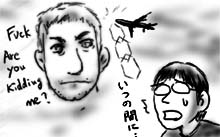
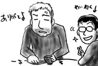
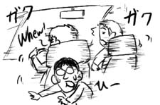
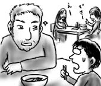
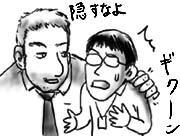

同僚のToddに先週のDean来訪について話したところ，彼から恐るべき情報がもたらされました．
なんと，例のプールバーの駐車場で，2年程前にCIAのエージェントが殺されたそうですよ．そんなに恐ろしいところでしたか！くわばら！
陰謀とかではなくて痴情のもつれだったそうなんですけど，それもどこまで信じればいいのやら．助けてモルダー！
同僚のToddに先週のDean来訪について話したところ，彼から恐るべき情報がもたらされました．
なんと，例のプールバーの駐車場で，2年程前にCIAのエージェントが殺されたそうですよ．そんなに恐ろしいところでしたか！くわばら！
陰謀とかではなくて痴情のもつれだったそうなんですけど，それもどこまで信じればいいのやら．助けてモルダー！
Dean出社最終日．
Deanは朝２時間ほどオフィスに滞在した後，午後一の飛行機でニューヨーク州に帰って行きます．一応，何かあった時に作業できるよう，朝８時にはオフィスにいたのですが…．
いつまでたってもDeanが現れません．廊下で見かけたマネージャのPaulに「Deanはもう発ったの？」と聞くと，「あーー，どうだろう．もう発ったんじゃないかな」と言っていました．そんないい加減な！
というわけで，別れの挨拶もしない間にDeanはいなくなっていました．嵐のようなヤツだったゼ！
型破りガイジンがやってきた!! 編 -完-
Dean来訪４日目．
今日は，僕の運転でDeanを日本食レストランへ連れて行きます．と言っても量を優先したのでSashimiとTeriyakiのコンビネーションプレートです(怪しい)．
最初に出て来た味噌汁をすすりながら，Deanが「味噌ってどうやって作るんだ？」と聞いてくるので，「大豆を茹でてから，壷に調味料と一緒に詰めて，床の下に１年くらい埋めておくんだ」と正直に答えたところ，ちょっと嫌そうな顔をしていました．これはESLクラスでもどこでも，大抵はみんな似たようなリアクションを返します．
そのうち，Deanは僕の様子がおかしいことに気づいたようです．「ヘイ，なんで味噌汁飲まないんだ？」と聞いてきます．僕は正直に答えます．「いや，ここの味噌汁，ちょっと洗剤の匂いがするから」
Deanは飲んでいた味噌汁のお椀をテーブルに静かに下ろし，「言ってくれて，ありがとうよ」と言っていました．
反逆精神健在也！
Dean来訪３日目．
今日は主にDeanと僕とでテストを行います．あきらかにちゃんと動かないので，あれが悪い，これが悪いとやっていたのですが，そのやりとりの中で彼の口癖が「Fuck! Are you kidding me?」であることに気づきました．普段同じフロアで仕事している人達はこういう言葉は使わないので，逆に新鮮です．
夜はチームメンバーでモンゴリアンBBQへ．会社に車を置いて，Deanのレンタカーに同乗して移動します．レンタカーのはずなのにシートは革張りの高級仕様．なんだこれ．乗り込んできたチームメンバーも皆一様に「Oh! Nice car!」と言います．Deanの運転は，アクセルをベタ踏みして前の車にテールゲートし，ギリギリまでブレーキを踏まず，時々「Whew!」と言いながら車体を左右へ小刻みに揺らせる，というもの．シートベルトはしません．この人むちゃくちゃ怖いっス！
モンゴリアンBBQは，要はジンギスカンですが，各テーブルに鉄板が用意されておらず，取り放題形式で材料を取った後は，スタッフが店の中央の大きな鉄板を使って焼いてくれます．Deanは店員の女性にちょっかいを出してましたが，もうそろそろ驚かなくなって来ました．
そしてその後，Pool Barへ拉致られました．うわーどうすりゃいいのか！
自慢じゃないですがビリヤードなんて両手で足りるくらいしかプレイしたことがありません．しかも，なんかボールを15個も使うんです．ルールを教えてもらいながら，少ない記憶を総動員してヘッピリ腰でショットを打ち込みます．落ちねー(微笑)．
Deanがカウンタで買って来たコロナビールをごくごく飲んで，気を紛らわせながら延々プレイ．みんな，いつ辞めるんだろう…．ボールの音と，Deanの「Fuck! Are you kidding me?」が頭に木霊します．
解放された時には22時を回っていたよ．
Dean来訪２日目．
今日も仕事はDuyとDeanと僕の３人で仕様確認．そして例によって昼飯はDeanと一緒に外出．今日は Duyの案内でベトナム料理レストランへ向かいます．
Deanは，ベトナム麺(フォー)を食べながら「これは美味いな！うん，気に入ったよ．メキシコ料理よりうまいな．てか俺，あんまりメキシコ料理好きじゃないんだよな」とか言ってます(伏線回収)．だったら昨日すぐに反対してください！新手のいじめですか！
店内の奥のテーブルで，女子学生ぽい二人組を目聡く見つけたDeanは，「ヘイ，あの奥の彼女ら，日本語で話してる？」と聞いきてます．確かに，よく聞くと日本語でレポートがどうしたとか言い合っています．「あー，確かに日本語だなぁ」と答えたところ，目を輝かせながら「ヘイ，Fuckしようぜ！って日本語で何て言うんだ？」と聞いて来ます．やっぱりこの人怖いよ！
しかし僕はここで，１音１音ハッキリと発音しながら，それは「や ら な い か ？」だと教えておきました(2ch用語)．
反逆精神健在也！
今日はニューヨーク州から仕事仲間のDeanがやって来ます．今週いっぱい滞在するDeanと一緒に，いろいろ仕様を確認したり，テストをしたりしなければいけません．はてさて，どうなることやら．
朝出社すると，DuyがDeanと連れ立って社員食堂に入ろうとしているところにバッタリ．Deanは，長身でガッシリした体つき．30台前半のナイス・ガイという風采の白人で，オシャレにスーツを着こなしていました．挨拶と握手を交わした後，流れで朝食を相席します．もっとも僕は朝飯は食べないのでコーヒーを購入しただけですけど．
Deanは，僕が今まで会った中でも最も一般的な白人のイメージに近い感じで，よく食べ，よくしゃべります．「ここは気に入ったか？」と聞くので「気に入ったとも」と答えると，「おいおい！俺もカナダからVISAでアメリカに来ているだけなんだ．似たような状況だろ．隠さなくたっていいんだぜ？」と肩を叩かれました．この人怖い！
午前中の仕事は，主にDuyがDeanに説明をして，僕は補足していただけなので特に問題もなく終了．今度は昼食へ向かいます．マネージャのPaulが，チームメンバーを乗せたBMWを走らせながら「何かアイデアはあるかい？」と僕に聞いています．なんで僕に！他の人の方がよっぽど詳しいじゃないか．しかし，聞かれたからには何か答えないと失礼なので，必死で考えを巡らせます．「あー，メキシカンとかどうだろう？」(伏線)．特に反対意見もなく，メキシコ料理レストランへ行くことになりました．みんなも考えろよ！
Deanは，車窓から若い女性が見えると「ヘイ」と声をかけて手を振ってます．やっぱりこの人怖い！
僕たちが入ったメキシコ料理レストランには，なぜか「チキンカレーブリトー」がありました．メキシカン？．もちろん注文しましたよ．カレー大好き！